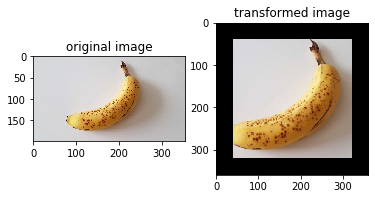

Lightweight Data Processing

When resources permit, in order to purse higher performance, data pipeline mode is generally used for data augmentation. That is, we have to define a map operator which helps us to start and execute the given data augmentation operator, and to transform the data in the data pipeline, for example:
random_crop = c_trans.RandomCrop([10, 10])
dataset = dataset.map(operations=random_crop, input_columns=["image"])
However, the pipeline code seems heavy while we sometime just want to perform inference on small-scale data.
Thus, MindSpore provides a lightweight data processing way to execute these augmentation operators, calls Eager Mode.
To use Eager mode, you only need to use the data enhancement operator itself as an executable function, you can write code easily as following:
import numpy as np
from PIL import Image
import matplotlib.pyplot as plt
import mindspore.dataset.vision.c_transforms as C
import mindspore.dataset.vision.py_transforms as P
wget -N https://mindspore-website.obs.cn-north-4.myhuaweicloud.com/notebook/datasets/banana.jpg --no-check-certificate
img_ori = Image.open("banana.jpg").convert("RGB")
print("Image.type: {}, Image.shape: {}".format(type(img_ori), img_ori.size))
# Define a Resize op from c_transform and execute it immediately
op1 = C.Resize(size=(320))
img = op1(img_ori)
print("Image.type: {}, Image.shape: {}".format(type(img), img.shape))
# Define a CenterCrop op from c_transform and execute it immediately
op2 = C.CenterCrop((280, 280))
img = op2(img)
print("Image.type: {}, Image.shape: {}".format(type(img), img.shape))
# Define a Pad op from py_transform and execute it immediately
# Before calling Pad, you need to call ToPIL()
op3 = P.ToPIL()
op4 = P.Pad(40)
img = op4(op3(img))
print("Image.type: {}, Image.shape: {}".format(type(img), img.size))
# Show the result
plt.subplot(1, 2, 1)
plt.imshow(img_ori)
plt.title("original image")
plt.subplot(1, 2, 2)
plt.imshow(img)
plt.title("transformed image")
plt.show()
The output is as follows:
Image.type: <class 'PIL.Image.Image'>, Image.shape: (356, 200)
Image.type: <class 'numpy.ndarray'>, Image.shape: (320, 570, 3)
Image.type: <class 'numpy.ndarray'>, Image.shape: (280, 280, 3)
Image.type: <class 'PIL.Image.Image'>, Image.shape: (360, 360)
The following shows the processed image.

Augmentation operators that support to be run in Eager Mode are listed as follows: mindspore.dataset.transforms, mindspore.dataset.vision, mindspore.dataset.text.transforms.